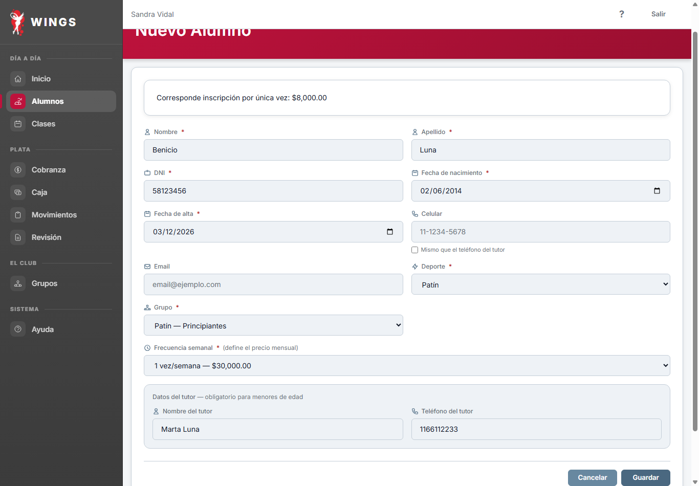
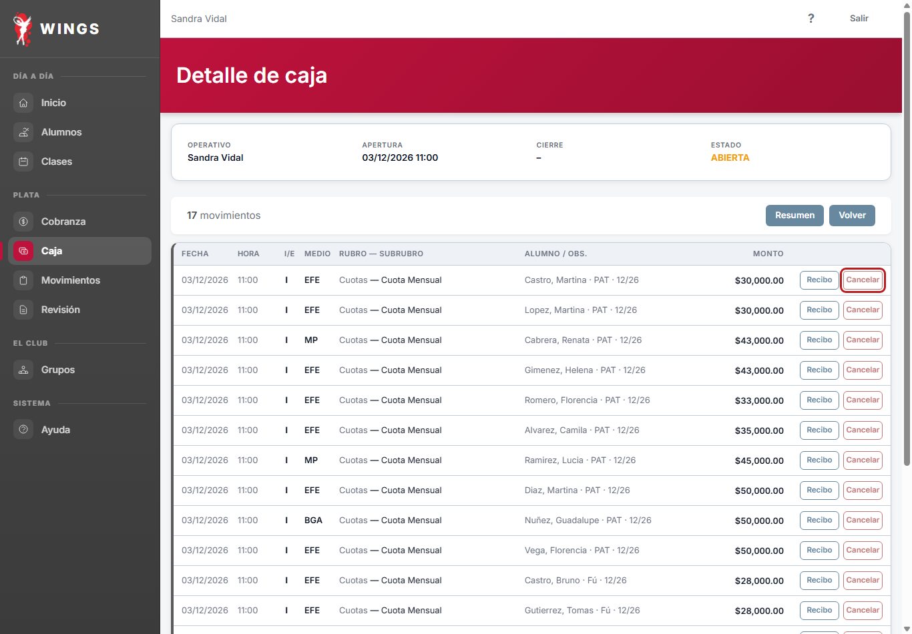
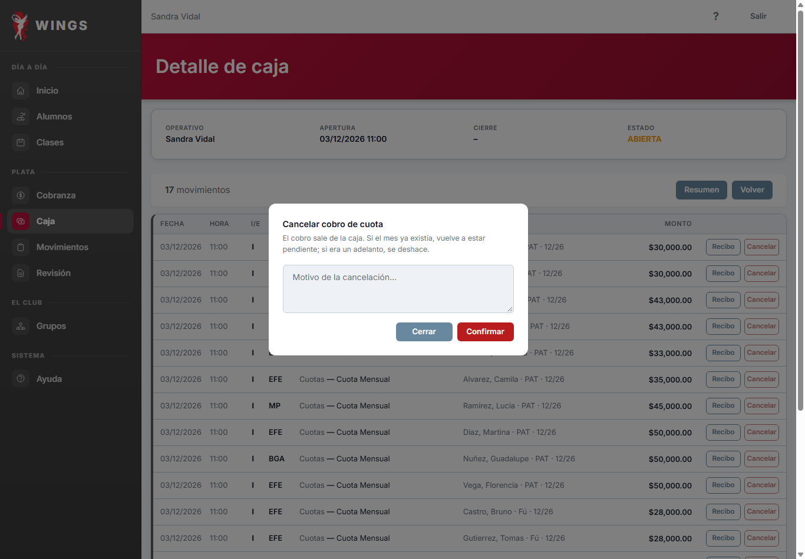
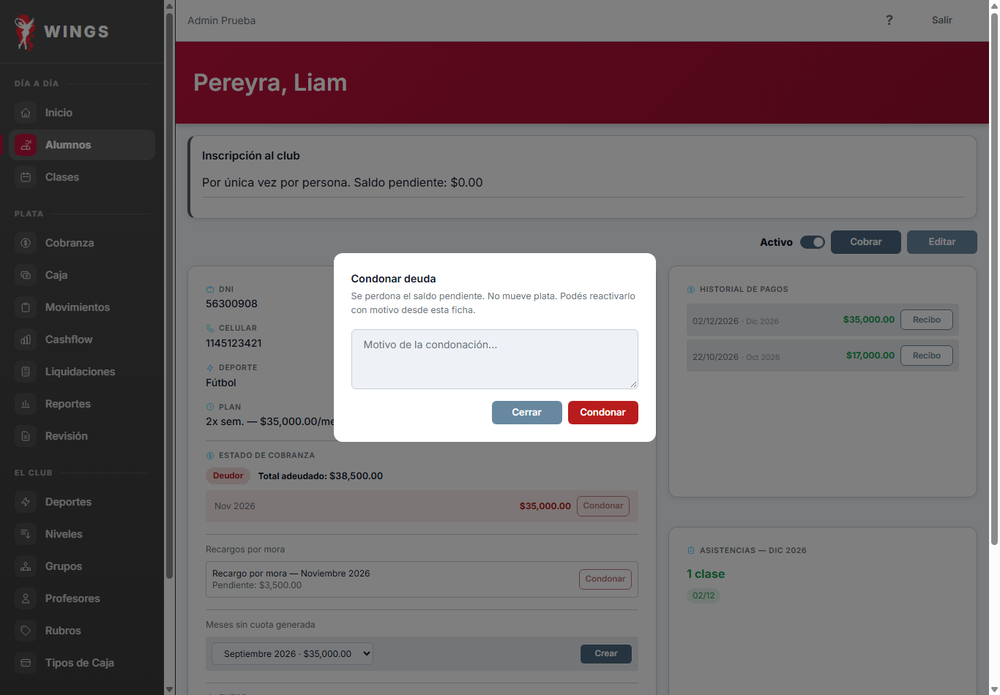
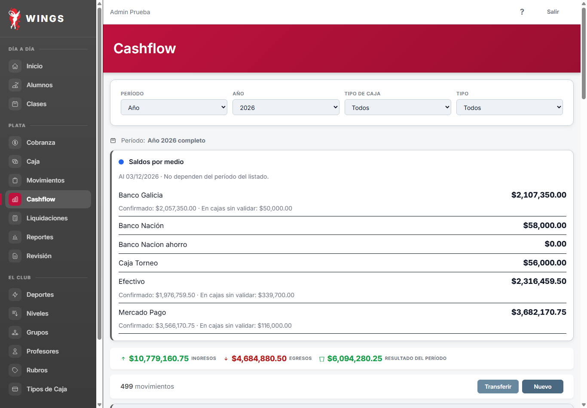
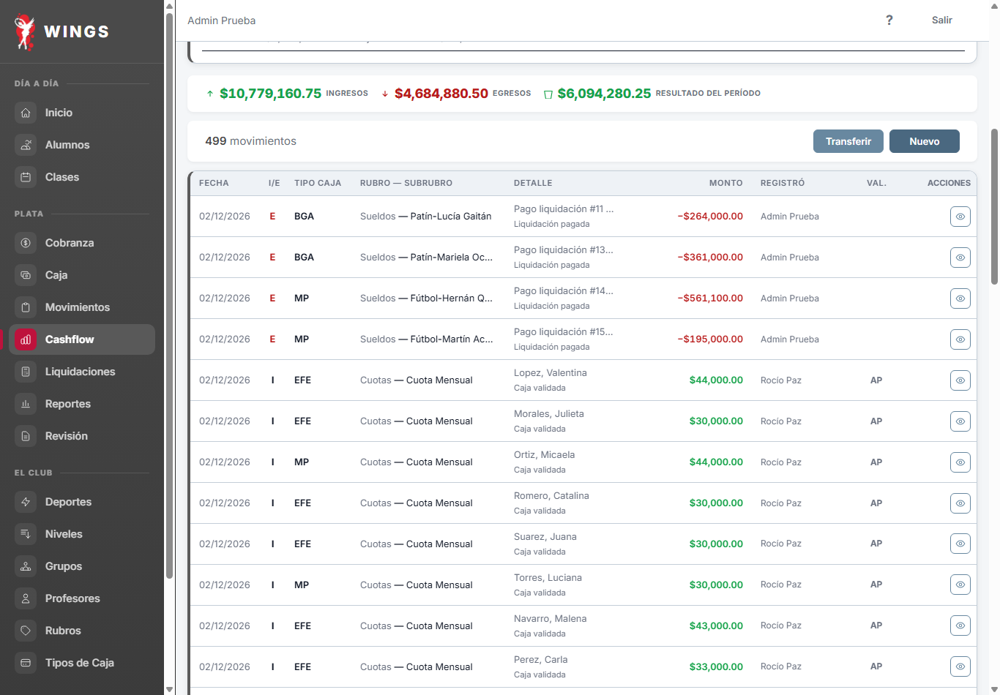
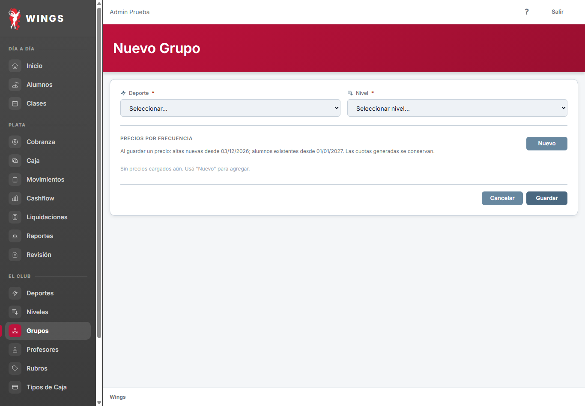

Escrito por Claude CAB el 01/11/2026. Son 14 páginas de 59. Las capturas son del Wings real, en un navegador y sobre una copia de la prueba. Lo controla Gemini. Queda abierta una decisión tuya: con qué rubro se compensa un cobro de más en una caja validada. El resto del manual sigue en la galería de la etapa C, que ya usa las capturas nuevas.
DNI repetido: ahora dice la regla real, una ficha por deporte. Captura: el aviso de inscripción real; antes mostraba un error.
¿Qué hago si dice «Ya existe un alumno con ese DNI en el mismo deporte.»? Esa persona ya tiene ficha en ese deporte. Buscala en **Alumnos**; si está *Inactiva*, reactivala desde su ficha. Wings tiene una ficha por deporte: para anotar a alguien en otro deporte, hacé un alta nueva con el mismo DNI.

Pregunta nueva: el aviso de que falta cargar Efectivo.
¿Qué hago si dice «El dueño tiene que configurar Efectivo antes de abrir la caja.»? Todavía no se cargó cuánto efectivo tiene el club. No podés abrir hasta que el dueño lo cargue: es una sola vez. Avisale y volvé a entrar.
Capturas: una fila de cuota con Cancelar y el panel con el texto nuevo.


La inscripción y los recargos no tienen casilla. Cancelar un adelanto lo deshace.
Paso 2. Elegir qué vas a cobrar 1. En la parte superior de la pantalla vas a ver los datos del alumno y el **Total pendiente**. 2. Marcá la casilla del mes que el alumno va a pagar (el mes en curso o meses anteriores). La inscripción y los recargos no tienen casilla: la inscripción pendiente se cubre antes que la cuota, en cualquiera de los deportes, y el recargo de un mes se cubre después de su cuota. 3. Si el alumno entrega un importe parcial, podés modificar el monto directamente en el campo de la cuota; o si adeuda matrícula de inscripción o recargos, ingresar lo que entrega en el campo **Importe que entrega (dejar vacío para cobrar el total)** para que Wings lo distribuya automáticamente. 
Corregida el 01/11 con la opción A de T116: el dueño carga el retiro en el turno, a su nombre, y se cierra sin faltante.
Regla del dinero del dueño: Si el dueño se lleva efectivo del cajón, lo carga él en tu turno y lo vas a ver a su nombre, en el rubro *Retiros*. Tu efectivo esperado baja por ese importe, así que contá lo que quedó y cerrá normalmente. Si se lo llevó y no lo cargó, pedile que lo haga antes de cerrar. También lo podés cargar vos, como cualquier egreso, en *Retiros* → *Retiro de dueños*: queda a tu nombre y el dueño lo ve al validar. Si lo cargó en Cashflow, tu esperado no cambia y cerrás con faltante: cerrá con lo que contaste y avisale.
Corregida el 01/11 con la opción A de T116: «Retiro de dueños» está en Ambos y entra al turno por Agregar.
Canal 2. Plata del cajón durante el turno de la operativa Si sacás efectivo del cajón con el turno abierto: 1. En **Caja**, en la tarjeta del turno, tocá **Agregar**, elegí la cuenta **Efectivo** y *Retiros* → *Retiro de dueños*. 2. Escribí el monto y el detalle, y guardá. El movimiento queda a tu nombre, en la columna **Registró**, y baja el efectivo esperado del turno. Así la operativa cuenta lo que quedó y cierra sin faltante. 3. Cuando valides la caja, pasa a Cashflow con su clasificación, y recién ahí baja la cuenta **Efectivo**. No lo cargues también en Cashflow: se descontaría dos veces. *Retiro de dueños* está en **Ambos**: la operativa ve tus retiros y, en su turno, también puede cargar uno, que queda a su nombre. Mientras el turno esté abierto puede corregir o eliminar los movimientos que tiene, también el tuyo. Lo ves al validar: tenés que verificar cada movimiento, y lo que se corrigió queda en la **Historia de correcciones** del detalle de la caja. Si la plata la sacás después del cierre, de lo que entrega la operativa, el retiro va por Cashflow (Canal 1) y no toca el turno. Si ponés efectivo en el cajón: 1. En **Caja**, en la tarjeta del turno, tocá **Agregar** y elegí tu subrubro de aporte. Tiene que estar en **Ambos** y en **Afecta caja**: así también lo ve y lo puede cargar la operativa. 2. El movimiento queda a tu nombre, en la columna **Registró**, y sube el efectivo esperado del turno. 3. Cuando valides la caja, pasa a Cashflow con su clasificación. ¿Qué pasa si dice «Tus movimientos se cargan en Cashflow; la caja es de la operativa. No se registró nada.»? Entraste por el formulario general de movimientos de caja, que es el de la operativa. Lo tuyo va por **Cashflow** (Canal 1). ¿Qué pasa si dice «El subrubro seleccionado no está permitido para usuarios operativos.»? En **Agregar**, Wings te ofrece todos tus subrubros, pero solo acepta los que están en **Ambos**. No se registró nada: cargalo por **Cashflow**. ¿Qué pasa si ya cargué el retiro del cajón en Cashflow con el turno abierto? El efectivo esperado del turno no se entera, así que a la operativa le va a faltar ese importe y la caja cierra con faltante. Avisale. Cuando valides vas a ver esa diferencia: la plata baja una sola vez, por tu retiro, porque el faltante no vuelve a descontarla de la cuenta. ¿Por qué la cuenta Efectivo quedó en negativo después de mi retiro? Los cobros en efectivo del turno entran a la cuenta recién cuando validás la caja. Wings te deja cargar el retiro igual, y el saldo se acomoda al validar. ¿Qué pasa si un gasto en el turno supera lo disponible en el cajón? Wings muestra: «El gasto supera el efectivo disponible en el cajón. Primero registrá un aporte de efectivo y después el gasto.» Cargá primero el aporte o corregí el importe.
Pregunta nueva: anular un cobro hecho por el dueño, sin caja.
¿Y si el cobro lo hice yo, sin caja? Ese cobro no entró a ningún turno, así que se anula desde la ficha del alumno: 1. En el historial de pagos de la ficha, tocá **Anular** en la fila del cobro. El botón solo aparece en los cobros sin caja que no estén anulados. 2. Escribí el motivo, de al menos 10 caracteres, y confirmá. Wings muestra «Cobro anulado.». La plata sale del cashflow y el recibo queda anulado. Si el mes ya existía, vuelve a estar pendiente; si era un adelanto, se deshace.
Remite a los dos casos. Captura: el texto nuevo de la ficha.
¿Qué hago si quiero devolverle a un alumno una cuota que ya pagó? Condonar no sirve para eso: solo perdona lo que se debe. Si el cobro lo hiciste vos, sin caja, se anula desde la ficha. Si pasó por una caja, ver *Corregir un movimiento mal cargado en una caja ya validada*: esa página explica los dos casos.

El ajuste no cambia el resultado en Reportes, pero sí se ve en Cashflow.
Ajustar el saldo de una cuenta Cuando el saldo de una cuenta no coincide con la realidad y ya no se puede editar, se corrige con un movimiento: 1. Entrá a **Cashflow** y tocá **Nuevo**. 2. Si en la cuenta falta plata, elegí **INGRESO**, rubro **Ajustes de saldo — entradas** y subrubro **Ajuste de saldo: entrada**. Si sobra, elegí **EGRESO**, rubro **Ajustes de saldo — salidas** y subrubro **Ajuste de saldo: salida**. 3. Elegí la cuenta en **Medio de pago**, escribí la diferencia en **Monto** y el motivo en **Observaciones**. Tocá **Registrar**. El ajuste cambia el saldo pero no el resultado del club en **Reportes**: ahí se suma a los aportes o a los retiros de los dueños. En **Cashflow** sí se ve en los ingresos o egresos del período, porque esa pantalla muestra toda la plata que entró y salió.
Aportes, retiros y ajustes suman en estos totales. Capturas con el catálogo real.


Dos filas iguales también al editar. Captura: Nuevo arriba, con la línea.

Con cambio programado se piden las dos tarifas. Editar sin tarifa no guarda.
Dar de alta un profesor 1. En el menú lateral, sección *El club*, entrá a **Profesores** y tocá **Nuevo**. 2. Completá los datos obligatorios: **Nombre**, **Apellido**, **DNI**, **Fecha de nacimiento**, **Dirección**, **Localidad**, **Teléfono** y **Deporte**. **Email** y **CBU o alias** son opcionales. 3. Según el deporte elegido aparece **Valor por hora** o **Porcentaje de comisión (%)** (hasta 100). Es obligatorio y tiene que ser mayor a cero: sin ese dato Wings no guarda y avisa «Cargá el valor por hora.» o «Cargá el porcentaje de comisión.». Si el deporte tiene programado un cambio de forma de pago para el mes que viene, aparecen los dos y hay que cargar los dos. 4. Tocá **Guardar**. Wings muestra «Profesor creado correctamente.». 
Qué significa «No» en Debe inscripción.
Paso 2. Descargar y conocer la plantilla 1. En la sección **2. Completar la plantilla**, tocá el botón **Descargar**. Wings generará el archivo en formato .xlsx listo para completar. 2. Abrí el archivo en tu computadora y completá **solamente la hoja Alumnos**: - Una sola fila por cada alumno en un deporte. Si una persona practica dos deportes, usá una fila distinta para cada deporte. - Escribí DNI, apellido, nombre, fecha de nacimiento, fecha real de ingreso al club y celular de contacto (para menores, es obligatorio indicar nombre y celular del tutor). - Seleccioná deporte, grupo y plan usando las listas desplegables de la planilla. - Respondé **Debe inscripción**: "Sí" genera esa deuda al importe vigente; "No" no la genera, y esa persona tampoco va a pagar inscripción si después se anota en otro deporte. - Si debe cuotas anteriores, respondé "Sí" en **Tiene deuda** y completá los pares **Período** (ej: "102026") y **Monto** con lo que efectivamente resta pagar (hasta 12 períodos por fila). 
La columna Registró.
Paso 3. Auditar los registros 1. En la tabla vas a ver: - La fecha y hora exacta del movimiento. - El indicador de **Ingreso** o **Egreso**. - El concepto o nombre del alumno involucrado. - El medio de pago utilizado. - El importe cobrado o egresado. - **Registró:** quién lo cargó. Un gasto que el dueño cargó en tu turno aparece a su nombre.